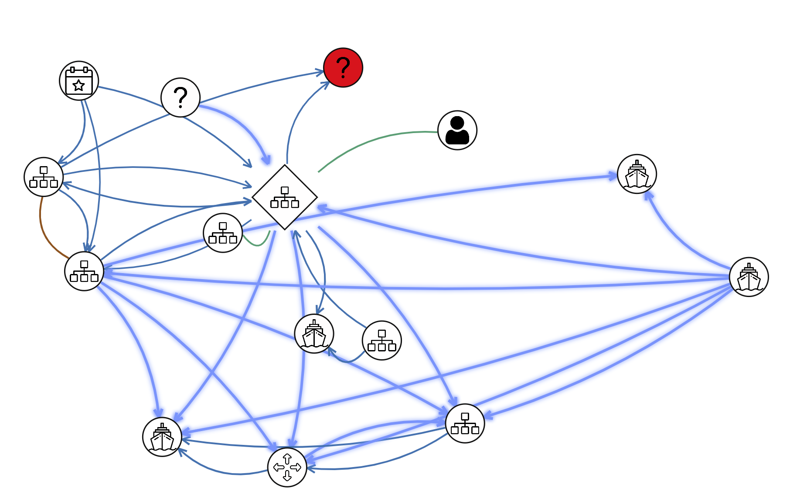
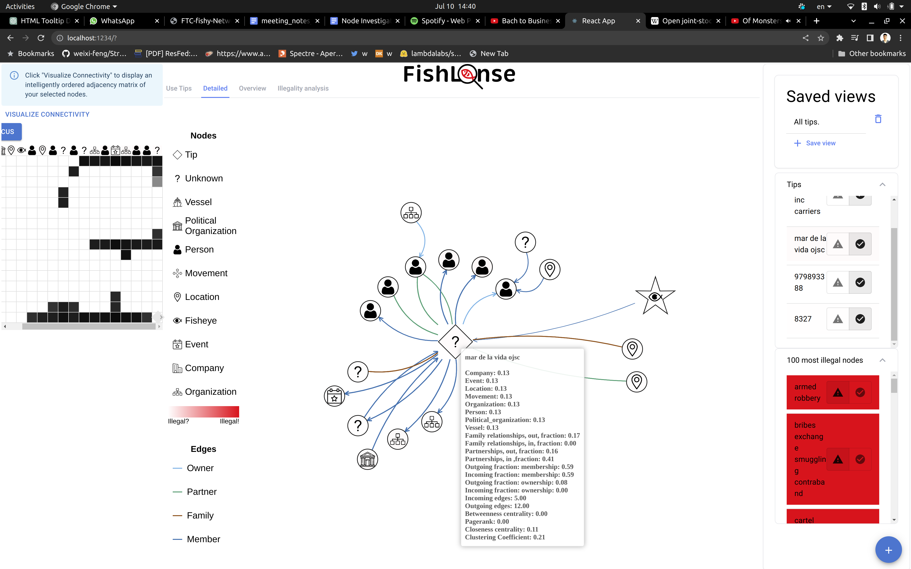
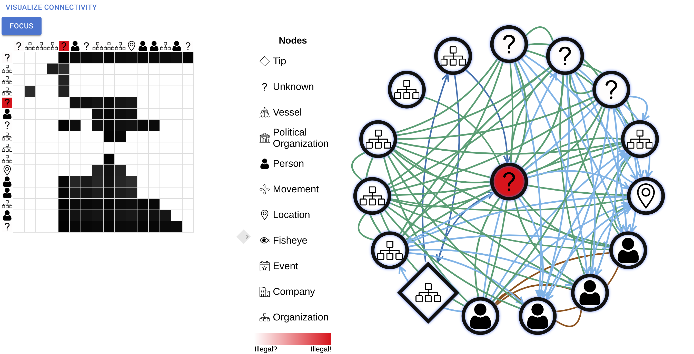
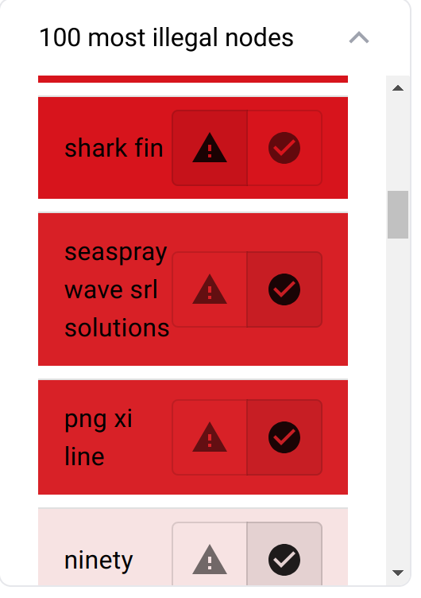
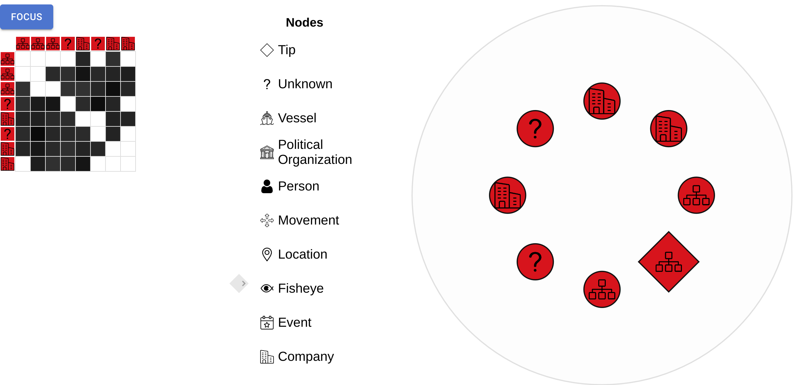

Robert Hönig, ETH Zürich, rhoenig@ethz.ch PRIMARY
Student Team: YES
Frontend: React
Detailed
view panel:
AntV
G6
Overview
panel:
Cosmograph
Backend:
Flask
Graph
Processing:
Networkx, Neo4j
BEA
algorithm:
bond_energy_algorithm_python (Github)
Node
classification:
scikit-learn
Approximately how many hours were spent working on this submission in total?
200
May we post your submission in the Visual Analytics Benchmark Repository after VAST Challenge 2023 is complete? YES
Video
Provide a link to your video. Example:
http://www.westbirmingham.ac.uk/uwb-smith-mc2-video.wmv
Design Image: The FishLense application. The center panel shows the local context of the four tips (◇). The left panel visualizes node connections with an intelligently ordered adjacency matrix. The right panel stores saved analyses and lists interesting nodes to explore.
Use visual analytics to analyze the available data and develop responses to the questions to be provided. In addition, prepare a video that shows how you used visual analytics to solve this challenge.
Questions
1 – Use visual analytics to dynamically display and explore context around the suspected entities listed above. What did you learn about each one? Can you connect them to illegal fishing? Provide evidence for or against the case that each entity is involved in illegal fishing and use visual analytics to express confidence in your conclusions. Limit your response to 600 words and 6 images.
I develop the FishLense application to explore the local context around nodes, in particular the four tips received.
8327
Initially, I parse all node names with GPT-4 to extract a list of 12 illegal nodes clearly involved in illegal activity. These include “illegal”, “shark fin”, etc. My interface highlights these nodes in red. Illustration 2 shows that 8327 is directly connected to an illegal node. At this stage, we have little information on illegal fishing patterns, so automatic exploration is not possible. Therefore, FishLense allows manual exploration of a node’s context by selectively hiding and showing connected nodes and edges. In Illustration 3 I have expanded 8327’s local context and used FishLense’s edge highlighting feature to highlight ownership relations. This reveals a complex ownership structure that indicates potential obfuscation of true ownership and hence illegal activity. Together with the direct link to a red node, this makes me sufficiently confident that 8327 is involved in illegal fishing.

Illustration 1: Initial view of 8327’s (◇) local context: 8327 with its 1-edge neighborhood. Edges often clutter the view and are hidden by default. Redness indicates my model’s illegality prediction.

Illustration 2: Exploration of 8327’s (◇) local context. Highlighted edges have type “ownership”. The red node is labeled “illegal”.
979893388
In addition to manual exploration, FishLense guides the user by automatically analyzing features of illegal nodes (see Question 2 for more details). It extract seach node into a feature vector and trains a classifier (see Question 2) to predict node illegality. FishLense finds that a high local clustering coefficient correlates with illegality. Illustration 4 shows 979893388, a hub with over 200 connections. The connections among its 1-edge neighborhood are too cluttered to make out clusters, so I use FishLense to arrange the neighborhood into communities with Louvain’s algorithm (see Illustration 5, right panel). This reveals some communities. To analyze the large community, FishLense provides an alternative visualization of connectivity via an adjacency matrix. I order the matrix columns and rows with the Bond-Energy Algorithm to heuristically maximize the size of visual patterns in the matrix. Black blobs around the diagonal indicate dense communities. I use this view to narrow the context of 979893388 to the interesting communities in Illustration 6. I conclude that 979893388 presence in several dense communities is evidence of illegal activity due to their high clustering coefficients. For now, I lack further evidence to strengthen my claim. This changes in Question 4.

Illustration 3: 1-edge neighborhood of 979893388.

Illustration 4: Right panel: Detected communities of 979893388’s neighbors. Left panel: Intelligently ordered adjacency matrix of the large community.

Illustration 5: Extracted interesting context of 979893388.
Mar de la vida ojsc
Illustration 6 shows Mar de la vida ojsc with its 1-edge neighborhood and node features. No feature raises suspicion. The high proportion of connected people can be explained by the fact that ojsc means Open joint-stock company, i.e. a publicly tradeable company. Finally, Mar de la vida ojsc has membership with FishEye, suggesting voluntary supervision. Hence, I find Mar de la vida ojsc unsuspicious.

Illustration 6: Context of “Mar de la vida ojsc”. Hovering over a node lists its features.
Oceanfront Oasis Inc Carriers
Oceanfront Oasis Inc Carriers also has a membership with FishEye. It is connected to three organization,. The organizations look unsuspicious, except for the tip 979893388. However, I find the connection of two tips alone is insufficient evidence for definite illegal activity.
2 – Use your visual analytics tool to compare and contrast what you learned about the suspect entities. Are there patterns that may indicate illegal activity? Use visual analytics to express confidence that a pattern exists and where uncertainty may be affecting this confidence. Limit your response to 400 words and 4 images.
FishLense automatically predicts patterns that may indicate illegal activity. To this end, FishLense processes each node into a feature vector with statistics on edge counts, a one-hot vector indicating node type, and betweenness centrality, pagerank, closeness centrality and clustering coefficient scores. FishLense then standardizes the feature vectors and labels each node as “illegal” or “unknown”, using the 12 initially extracted illegal nodes. Finally, FishLense fits a logistic regression model. I use this model because it returns interpretable coefficients that correlate with a node’s illegality. The fit sparsifies predicted coefficients via Lasso regularization to increase coefficient significance. Illustration 7 shows how FishLense visualizes the feature coefficients. A crucial advantage of logistic regression is its robustness to class imbalances. We can see that the model “absorbs” the class imbalance via a strongly negative bias and still yields interpretable coefficients.

Illustration 7: Node feature importance predicted by FishLense.
Pattern: Clustering coefficient.
In Illustration 7, FishLense assesses that a node’s clustering coefficient (i.e. how densely its 1-edge neighborhood is connected) positively correlates with illegal activity. Illustration 8 visually supports this hypothesis. In addition, Illustration 5 shows that tip 979893388 is involved in several densely connected communities.

Illustration 8: One of the “illegal” nodes and its one-edge neighborhood. The neighborhood is densely connected so “illegal” has a high clustering coefficient.
Pattern: Connection to illegal node
A connection to one of the 12 nodes labeled “illegal”, like in the case of 8327, is clearly a strong suspicious pattern.
Pattern: Complex ownership connections
Illustration 10 supports the earlier hypothesis that complex ownership relations are suspicious because it shows an even more complex ownership pattern for an illegal node.

Illustration 10: Ownership relations of node “illegal”.
Anti-pattern: High proportion of family relationships
Illustration 7 shows strong negative correlation between the proportion of family relationships and illegality. This is in line with our finding that Mar de la vida ojsc is not suspicious, because half of its connected people have family relationships (see Illustration 10).

Illustration 10: Family relationships of Mar-de-la-vida-ojsc
Out of over 3,000 nodes, I only possess 12 nodes labeled illegal. Due to this lack of data, the automatic classifier likely misses suspicious patterns. Another source of uncertainty is the noisy knowledge graph. In particular, edge labels are often nonsensical (organizations are “members” of movements, etc.) so only their summary statistics should be used.
Provide your answer and corresponding images here.
3 – What other companies should FishEye investigate for illegal fishing? Show how your visual analytics can be used to find entities that are worthy of further investigation. Limit your response to 600 words and 6 images.
First, I use FishLense to take visualize the entire graph by navigating to the overview panel in Illustration 11. The overview shows that the graph consists of a connected component that contains most of the nodes. In addition, there are several small disconnected components. To investigate the small components, I use the selection transfer feature to display them in the detailed view panel in Illustration 12. This component is likely an artifact because it has unnaturally symmetric connectivity and nodes with meaningless, unstructured names. Other small components are similarly uninformative. Therefore, I do not consider them for further investigation and treat them as outliers for the classification model.

Illustration 11: FishLense’s overview panel. This panel shows the entire graph.

Illustration 12: Isolated connected component.
Next, I go through the 12
initial illegal nodes. Some of their names are illegal but unrelated
to fishing, like “dark web vendor
illegal narcotics”, so I do not consider them further. Among the
others, I first focus on “shark fin” (see
Illustration 13). It has only two connections: One to Robert Adams,
and one to 903311212,
making
both suspicious. In addition, 903311212
has
a high proportion of incoming memberships, which is a suspicious
feature according to FishLense’s classifier.
Since
Robert Adams is connected to 903311212,
we
label both as illegal. Next,
I look at one of the nodes labeled “illegal”. It has a sole
connection to 5007554,
which also features a complex ownership
structure. Thus,
I label 5007554
illegal.
FishLense
can learn from the new labels. To this end, FishLense employs active
learning and can re-fit the classification model after node labels
have been updated. For
example, Illustration 13 shows the updated feature coefficients after
I marked 8327 illegal (compare with Illustration 12). This
creates a feedback loop where I repeatedly validate nodes that the
model has marked as suspicious and update the model with the new
label to get new, more confident and refined suggestions.
Illustration
14 shows FishLense’s interface to inspect and label highly
suspicious nodes.
Concretely, I identify the
following additional suspicious nodes:
“seaspray
wave srl solutions”, “ocean fisheries llc”, “mar del oeste
pic”, “png xi line”, “faroe islands shrimp shark”,
“979893388”, “playa del cielo kga” and “341411”.
Except
for mar del oeste pic, all these nodes are in a densely connected
community (see Illustration 15). Note
that this list includes the tip “979893388” that showed some, but
inconclusive evidence for illegal fishing activity.
It is still
necessary to manually validate model suggestions. For example
Illustration 16 shows a movement with a high local clustering
coefficient. While our model treats this as a suspicious pattern, it
is likely only meaningful for entities such as corporations or
organizations.

Illustration 13: Node feature importance predicted by FishLense after labeling 8327 illegal.

Illustration 14: FishLense suggestions of suspicious nodes.

Illustration 15: Cluster of suspicious nodes.

Illustration 16: Densely connected 1-edge neighborhood of movement node “ninety”.
4 –Reflection: What was the most difficult aspect of working with this knowledge graph? Did you have the tools and resources you needed to complete the challenge? What additional resources would have helped you? Limit your response to 300 words
The most difficult aspect is the noise in the node names and edge types. For example, movements often have confusing names like “three” or “weeks” . Edge types sometimes do not fit the node types or names, like when “mar de la vida ojsc” has a family connection with a location. This made my initial attempts at manually exploring the graph unsuccessful. FishLense’s automatic feature importance weighting and node suggestions later helped to see through the noise.
To optimally deal with the noise in the graph, it would have been useful to know how the NLP tool used to extract the graph works. Even nonsensical edges may provide information when inspected in context of the NLP algorithm.
My personal laptop provided sufficient computing resources. The knowledge graph is small enough that most algorithms execute instantly or within a few seconds.